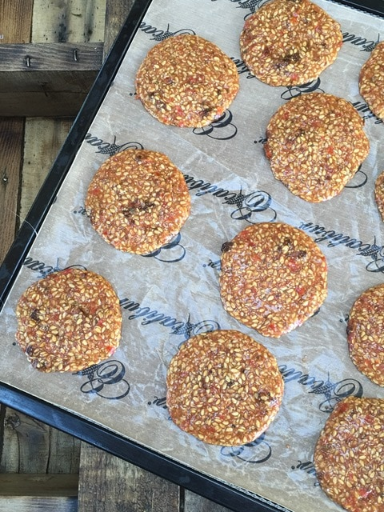
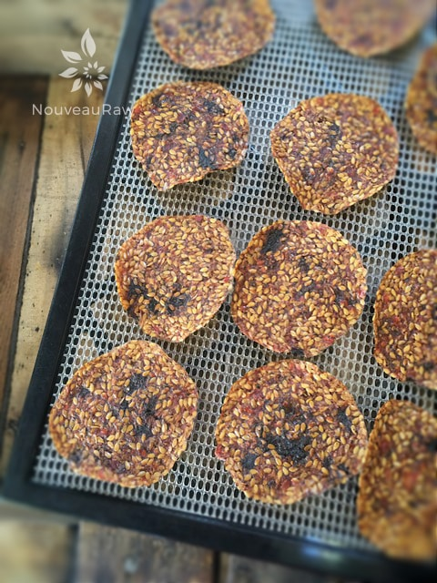

Sweet & Savory Italian Crackers

~ raw, vegan, gluten-free, nut-free ~
I am a big fan of foods that offer a sweet and savory flavor. Did you know that we have almost 10,000 taste buds inside our mouths?!
We taste sweet and salty foods on the tip of the tongue, sour on the sides, and bitter towards the back. So maybe that’s why I enjoy this cracker so much, the second it hits my tongue, I have an explosion of taste going on?!
I made this cracker tonight because I had some leftover Cherry Tomato Marinara Sauce in the fridge. I didn’t want it to go bad and I knew several of our up-and-coming meals were already spoken for so I stood in the kitchen staring down at my jar of sauce wondering what the heck I could do with it. I dislike wasting food so I thought, well shoot, I will just whip me up some good ole flax crackers with it. I will put the complete recipe here for you.
In case you are questioning why I used whole flax seeds as well as ground… I have an answer for you. Both offer binding properties, but the ground flax seeds will add a little more structure to the cracker. I find it helpful to use both forms when creating cracker recipes.
I hope you enjoy this recipe and I can’t wait to hear what you think of it. Many blessings, amie sue
Ingredients:
yield 50 (2.5 x 2.5″) crackers
- 3 cups water
- 1 cup flax seeds
- 1/2 cup ground flax seeds
- 2 1/2 cups halved cherry tomatoes
- 1/2 cup minced sun-dried tomatoes
- 2 Tbsp cold-pressed olive oil
- 1 clove garlic
- 2 tsp dried oregano
- 2 tsp dried basil
- 2 tsp maple syrup
- 1 tsp Himalayan pink salt
Preparation:
- In a large mixing bowl combine the; water, whole flax seeds, and ground flax. Stir together and set aside.
- In the food processor combine; cherry tomatoes, sun-dried tomatoes, oil, garlic, oregano, basil, sweetener, and salt.
- Add to the soaking flax.
- Stir well making sure that there aren’t any lumps of flax floating around.
- Set aside until all the liquid has been absorbed. Roughly 30 minutes.
- Using the 2 Tbsp size cookie scoop, dip the scoop into the batter and level it off with a spatula. So have the cookie scoop in one hand and a spatula in the other. In time you will create a steady rhythm.
- Place the cracker batter on the non-stick sheet with a little space between them. The batter will spread out a bit.
- If you have an Excalibur 9 tray dehydrator, you can fit 25 crackers per tray.
- Continue this process until you have used up all the batter.
- Sprinkle coarse sea salt on top.
- Dehydrate at 145 degrees (F) for 1 hour, then reduce to 115 degrees (F) for about 4 hours.
- Once it is dry enough, flip the teflex sheet over onto the mesh sheet and peel the teflex off.
- If seeds are sticking to it as you try to do this, it’s not ready to flip.
- But if it is ready, flip it and score into the desired cracker size and sprinkle salt on the crackers.
- Return to the dehydrator.
- Continue dehydrating until nice and crisp.
- Store in a glass sealed container on the countertop and watch them disappear!
Culinary Explanations:
- Why do I start the dehydrator at 145 degrees (F)? Click (here) to learn the reason behind this.
- When working with fresh ingredients it is important to taste test as you build a recipe. Learn why (here).
- Don’t own a dehydrator? Learn how to use your oven (here). I do however truly believe that it is a worthwhile investment. Click (here) to learn what I use.

In the photo above, the crackers are ready to head into the dehydrator… in the photo below, they just came out. As you notice, they curl a little while they dry. To me, that adds character. :)

© AmieSue.com